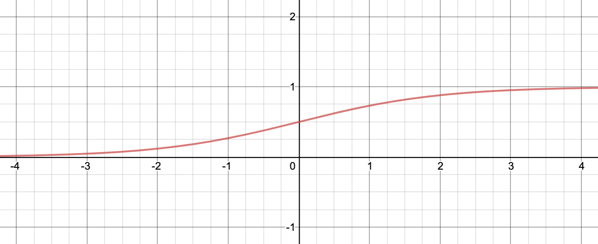
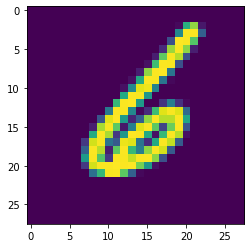
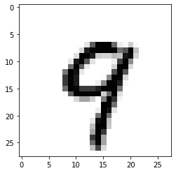
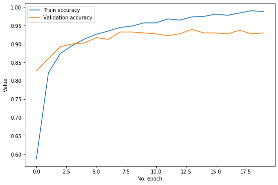

โดย ชิตพงษ์ กิตตินราดร | มกราคม 2563
หลังจากที่เราสามารถสร้างโมเดล Deep learning แบบพื้นฐานแล้ว เราจะมาสำรวจปัญหาต่างๆ ในการเทรน Neural network และแนวทางแก้ไข โดยในบทนี้จะพูดถึงปัญหา Vanishing gradients
ในการเทรน Deep neural network เราอาจพบว่าโมเดลเทรนจบจนได้ Loss ที่ต่ำที่สุด แต่ก็ไม่ต่ำเท่าที่ควร นั่นคือเกิดปัญหา Bias ทั้งๆ ที่เราได้วางโครงสร้าง Layers, จำนวน Neuron, และจำนวนรายการเนื้อหาเหมาะสมเพียงพอแล้ว
บ่อยครั้งที่ Bias นี้ เกิดจากปัญหาที่เรียกว่า Vanishing gradients นั่นคือการที่เมื่อเราเทรนโมเดลโดยการอัปเดต Parameter ซ้ำๆ ในกระบวนการ Gradient descent อนุพันธ์ บางตัวจะมีค่าน้อยลงจนเหลือน้อยมากๆ โดยเฉพาะในตัวที่อยู่ใน Layer ชั้นแรกๆ ที่ใกล้กับ Input layer ส่งผลให้การอัปเดต Parameter ครั้งถัดไป Loss จะเปลี่ยนแปลงน้อยลงมากจนไม่เกิดผลในการ Optimise หรือต้องใช้เวลา (จำนวนรอบ) สูงมากๆ ในการเทรน อนึ่ง ในทางกลับกัน หากอนุพันธ์เพิ่มขึ้นสูงเกินไป ก็จะเกิดปัญหาที่เรียกว่า Exploding gradients ซึ่งก็ส่งผลให้ Optimise ไม่สามารถ Converge หาคำตอบที่ดีได้เช่นกัน
ปัญหา Vanishing gradients นี้มีแนวทางในการแก้ 3 แนวทางด้วยกัน ได้แก่:
ซึ่งเราจะอธิบายทีละแนวทาง
ถ้าเราตั้งค่าตั้งต้นให้กับน้ำหนัก เป็น 0 เราจะแทบไม่สามารถเทรนอะไรได้เลย เพราะทุก Neuron ใน Layer แรกจะส่งค่า Activation เดียวกันออกไปยัง Layer ถัดไป ดังนั้นเราจึงต้องตั้งค่าตั้งต้นน้ำหนัก ให้ไม่ใช่ 0 และไม่ใช่ตัวเลขที่เท่ากัน
แต่ถ้าเราตั้งค่าตั้งต้นของ เป็นตัวเลขสุ่มทั่วไป จะพบว่าบางตัวเลขอาจทำให้เกิดปัญหา Vanishing gradients ดังนั้น เราจึงต้องมีวิธีที่ดีในการสุ่มค่าตั้งต้นของ
วิธีดังกล่าว เรียกว่า Xavier initialisation มีหลักการคือจะต้องสุ่มค่าที่ทำให้ Variance ของ Output เท่ากับ Variance ของ Input ใน Layer เดียวกัน และต้องทำให้อนุพันธ์ ในแต่ละ Layer มี Variance เท่ากันทั้งขาเข้าและขาออกเมื่อทำ Backward propagation ด้วย อย่างไรก็ตามข้อกำหนดนี้เป็นไปไม่ได้ที่จะทำจริง เพราะจะทำได้ก็ต่อเมื่อแต่ละ Layer มีจำนวนการเชื่อมต่อขาเข้าเท่ากับขาออก ดังนั้นวิธีที่ดีที่สุดในการจำลองผลลัพธ์นี้ให้เกิดขึ้นได้ คือการใช้สมการต่อไปนี้:
โดย คือจำนวนการเชื่อมต่อขาเข้าของ Layer นั้น ส่วน คือจำนวนการเชื่อมต่อที่ออกจาก Layer นั้น
วิธี Initialisation นี้เรียกว่า Xavier initialisation ตามชื่อของผู้คิดค้น ถูกออกแบบให้ใช้กับ Tanh activation function ซึ่งจะอธิบายในส่วนถัดไป
อย่างไรก็ตาม ในปัจจุบันเรามักใช้ Activation function ตระกูล ReLU แทน Sigmoid และ Tanh ดังนั้นเราจึงต้องเปลี่ยนแปลงวิธี Initialise ของ Xavier ให้อยู่ในรูปนี้:
วิธีนี้เรียกว่า He initialisation ตามชื่อผู้คิดค้น ความแตกต่างกับ Xavier คือวิธีของ He พิจารณาเฉพาะจำนวนการเชื่อมต่อขาเข้าเท่านั้น
ทั้งสองวิธีเป็นวิธีสุ่มจาก Uniform distribution คือกระจายตัวออกเท่าๆ กันตลอด Range ของข้อมูล เราสามารถจะเลือกสุ่มแบบ Normal distribution คือกระจายการสุ่มให้กระจุกตัวเยอะตรงกลางๆ ของ Range ก็ได้ โดยการเปลี่ยนแปลงสมการเล็กน้อย ทั้งนี้ใน TensorFlow เราสามารถกำหนดวิธีการ Initialise ค่าน้ำหนักได้โดยใช้ Argument kernel_initializer ใน Layer เช่น:
model.add(Dense(64,
kernel_initializer='he_uniform',
bias_initializer='zeros'))
อนึ่ง ค่าน้ำหนักของ สามารถเริ่มด้วย 0 ได้ ไม่มีปัญหาอะไร
ปัจจุบัน แนะนำให้ใช้ He initialiser เพราะออกแบบมาให้ใช้กับ Activation function ตระกูล ReLU และ ELU ซึ่งแนะนำให้ใช้แทน Sigmoid หรือ Tanh โดยจะพูดถึงเรื่องนี้ในส่วนถัดไป
ทบทวนอีกครั้ง ว่าการคำนวนของแต่ละ Neuron ประกอบด้วยการรับ Input มาถ่วงน้ำหนักกับ และ จะได้ Linear function จากนั้นจะนำ ไปเป็น Input ของ Activation function ซึ่งได้ผลเป็น เขียนรวมได้ทั้งหมดดังนี้:
หน้าที่ของ Activation function คือการควบคุม Output ของ Neuron ให้อยู่ใน Range ที่ Neuron ชั้นถัดไปจะคำนวนได้ง่าย และถ้าหาก Activation นั้นอยู่ใน Hidden layer ชั้นสุดท้าย ก็จะมีหน้าที่ควบคุม Range ของ Output ให้สามารถตีความเป็นคำตอบได้ง่าย
ยกตัวอย่างเช่นเมื่อใช้ Sigmoid function แทน ตามสมการด้านล่าง ค่า Activation ที่ได้จะอยู่ในช่วง 0 ถึง 1 เท่านั้น ซึ่งสะดวกในการตีความแบบ Classification (มากกว่า 0.5 คือ "ใช่" น้อยกว่าคือ "ไม่ใช่"):
หากดูภาพ Sigmoid function ก็จะเห็นว่าหาก สูงมากๆ Activation ก็จะได้ผลเข้าใกล้ 1 ในทางกลับกัน หาก น้อยมากๆ Activation ก็จะได้ผลเข้าใกล้ 0:

นอกจาก Sigmoid ยังมี Activation function ที่คล้ายกัน คือ Tanh ย่อมาจาก Hyperbolic Tangent ซึ่งอยู่ในรูปนี้:
Tanh ต่างจาก Sigmoid ตรงที่ Output จะอยู่ใน Range -1 และ 1 ซึ่งส่งผลให้การตีความแตกต่างออกไป โดยมีจุดตัดการตัดสินใจที่ 0 ไม่ใช่ 0.5 ตามที่เห็นในภาพ:

สังเกตว่า Output range ของ Tanh คือ 2 สูงกว่า Range ของ Sigmoid ที่เท่ากับ 1 อยู่ 2 เท่า
ทั้ง Sigmoid และ Tanh ต่างมีปัญหาหลักอยู่ 2 อย่าง ดังนี้:
ปัญหาทั้งสองนี้แก้ได้โดยการเปลี่ยน Activation function เป็น ReLU
ReLU ย่อมาจาก Rectified Linear Unit เป็นฟังก์ชันที่เรียบง่ายมาก เรียกว่า Ramp function คือถ้า Input มีค่าตั้งแต่ 0 ขึ้นไป Output ก็จะมีค่าเท่ากัน ส่วน Input ที่น้อยกว่า 0 จะกำหนด Output เป็น 0 ตลอด ลองดูภาพประกอบ:

ภาพโดย Qef - Own work by uploader, hand-written SVG., Public Domain
สามารถเขียน ReLU เป็นสมการได้ดังนี้:
หรือเขียนได้อีกอย่างว่า:
ดูเผินๆ เหมือนว่า ReLU ไม่น่าจะช่วยให้โมเดลทำงานได้ดี เพราะ Output เป็น Linear function ที่แทบไม่ได้ดัดแปลงแก้ไขอะไร แต่ในความเป็นจริงพบว่า การใช้ ReLU ใน Hidden layer นอกจากจะทำให้การเทรนทำได้รวดเร็วกว่า Sigmoid หลายเท่าแล้ว ยังช่วยแก้ปัญหา Vanishing gradients ได้เป็นอย่างมาก เพราะความชันของฟังก์ชันจะเป็นค่าคงตัว คือ 1 เสมอ
จะเห็นว่าการทำงานของ ReLU คือการ "ส่งต่อ" Linear function ออกไป โดยเลือกปิด Neuron บางตัวออกไปเลยหาก Neuron นั้นมีค่าน้อย ซึ่งพฤติกรรมนี้อาจส่งผลให้ Optimiser ไม่สามารถ Converge หา Loss ที่ต่ำเท่าที่ควร แต่ในความเป็นจริง ปัญหานี้ไม่ได้เกิดขึ้นตลอดเวลา เพราะ Activation function ใน Neuron หนึ่งๆ คือผลรวมของ Input ทุก Feature ดังนี้:
นั่นแปลว่าต่อให้มี บางคู่ที่ให้ผลลบ แต่โดยรวมแล้ว ทุกคู่บวกรวมกัน ก็มีโอกาสที่จะเป็นบวกสูงกว่าเป็นลบมาก ดังนั้นจึงมีโอกาสน้อยที่ ReLU จะให้ผลออกมาเป็น 0
แต่ก็ไม่ใช่ว่าจะไม่มีโอกาสที่ ReLU จะให้ผลลบเลย ในบางโมเดล Neuron หลายสิบเปอร์เซ็นถูกปิดเพราะ ReLU ทางแก้คือใช้ Activation function ที่ดัดแปลงส่วนแบนของ ReLU ให้มีความลาดเอียงเล็กน้อย เรียกว่า Leaky ReLU:
หน้าตาของกราฟจะคล้าย ReLU แต่ส่วนบนจะลาดลงเล็กน้อย เช่นถ้า Input เท่ากับ -1 จะส่งผลให้ Output เท่ากับ -0.01 เป็นต้น
ล่าสุด ในปี 2015 มีคณะนักวิจัยเสนอ Activation function ใหม่ที่ชื่อ ELU หรือ Exponential Linear Unit ที่ทดสอบแล้วได้ผลเหนือกว่า ReLU และ Leaky ReLU ทุกด้าน เช่น เวลาที่ใช้เทรนโดยรวมสั้นกว่า และได้ความแม่นยำสูงกว่า ELU มีสมการดังนี้:

ภาพโดย Laughsinthestocks at English Wikipedia - Transferred from en.wikipedia to Commons., CC0
ELU มีคุณสมบัติที่อุดช่องว่างของ Activation function อื่นๆ ที่ผ่านมา ช่วยลดปัญหา Vanishing gradients เพราะอนุพันธ์ของฟังก์ชันยังมีค่าบวกอยู่ถึงแม้ Input จะมีค่าน้อยกว่า 0 ไปจนถึง -2 โดยเราสามารถปรับค่า Hyperparameter เพื่อกำหนดว่า Output จะมีค่าเท่าใดเมื่อ Input มีค่าติดลบมากๆ โดยปกติตั้งไว้ที่ 1
ข้อเสียของ ELU คือต้องใช้พลังประมวลผลมาก แต่ก็แลกกับการที่ทำให้ Optimiser นั้น Converge เร็วขึ้น อย่างไรก็ตามในเวลาทดสอบกับ Test set หรือเวลาใช้โมเดลพยากรณ์จริง (Forward propagation ขาเดียว) ELU จะใช้เวลานานกว่า ReLU ดังนั้นใน Application ที่ความเร็วในการได้ผลลัพธ์เป็นสิ่งสำคัญ ก็ควรพิจารณาให้ดีว่ายอมรับความช้าลงได้หรือไม่
ปัจจุบันแนะนำให้ใช้ ELU เป็นอันดับแรก ตามด้วย Leaky ReLU, ReLU, Tanh, และ Sigmoid
ใน TensorFlow เราสามารถเลือกใช้ Activation function ใดก็ได้ เพียงแค่เปลี่ยนค่าของ Argument activation ใน Model layer
ต่อมาเป็นเทคนิคสุดท้ายเพื่อลดปัญหา Vanishing gradients นั่นคือ Batch normalisation
เวลาเทรนโมเดลหลายๆ ครั้ง ค่าเฉลี่ยและการกระจายตัวของ Input สำหรับแต่ละ Neuron ในแต่ละ Layer จะมีแนวโน้มที่จะเปลี่ยนไปเรื่อยๆ ซึ่งทำให้ Gradient descent ทำงานได้ไม่เต็มประสิทธิภาพ เช่น ใช้เวลานานในการคำนวน และต้องใช้จำนวนรอบมากกว่าจะ Converge ได้ เรียกปัญหานี้ว่า Internal covariate shift ดังนั้นเมื่อพิจารณาว่าข้อมูล Input เริ่มแรกต้องถูก Scale ให้เรียบร้อยเสียก่อน ทำไมเราจึงไม่ Scale และ Normalise ข้อมูล Input ของแต่ละ Layer ระหว่างการเทรนไปด้วยเสียเลย
Batch normalisation คือการปรับ Mean และ Variance ของ Input สำหรับแต่ละ Layer ให้เป็นมาตรฐาน แล้วปรับ Scale และตำแหน่งของ Input ทั้งชุดให้ เทคนิคนี้เพิ่งถูกเสนอเมื่อปี 2015 นี้เอง การทำ Batch normalisation นอกจากจะทำช่วยลดปัญหา Vanishing gradient ลงเกือบทั้งหมดแล้ว ยังทำให้เราสามารถตั้ง Learning rate ได้เร็วขึ้น หรือลดจำนวน Epoch ที่ต้องเทรน (เพราะ Input ไม่ใหญ่เกินไป) ส่งผลให้เทรนโมเดลได้เร็วขึ้น นอกจากนี้ยังให้ผลในการ Regularise ด้วยระดับหนึ่ง
ขั้นตอนในการทำ Batch normalisation มีดังนี้:
1) หา Mean และ Variance ของ Mini-batch :
2) Normalise ด้วยการนำ Input ไปลบกับ Mean ของ Mini-batch และหารส่วนเบี่ยงเบนมาตรฐานของ Mini-batch:
โดย อ่านว่า Epsilon คือจำนวนขนาดเล็กมากๆ ที่บวกเข้าไปเพื่อป้องกันไม่ให้ตัวหารของสมาการเป็น 0 โดยปกติตั้งเป็น
3) Scale และปรับตำแหน่งชุดข้อมูลโดยการนำ ไปคำนวนร่วมกับ Scaling parameter และ Shifting parameter :
โดย Scaling parameter และ Shifting parameter จะถูกใส่เข้าไปใน Backward propagation เพื่อให้ Algorithm ปรับค่าทั้งสองนี้ระหว่างเทรน
มีข้อสังเกตว่าถ้าเราทำ Batch normalisation บน Hidden layer แรก ก็ไม่มีความจำเป็นต้อง Normalise input ตั้งแต่แรก
อย่างไรก็ตาม Batch norm ทำให้การคำนวน Forward propagation ช้าลง ดังนั้นจึงควรพิจารณาว่าการใช้ He initialisation บวกกับ ELU activation function นั้นให้ผลดีเพียงพอแล้วหรือไม่
ใน TensorFlow เราสามารถทำ Batch normalisation โดยการสร้าง Layer ชื่อ BatchNormalization ได้เลย
เป็นอันว่าเราเรียนรู้เทคนิคที่จะลดปัญหา Vanishing gradients ได้ถึง 3 แนวทาง บทต่อไปเราจะมาทำความรู้จักกับ Optimiser ต่างๆ ที่จะช่วยเพิ่มความเร็วในการเทรนโมเดล
หน้าแรก | บทที่ 14 Neural Network Programming | บทที่ 16 Neural Network Optimisers